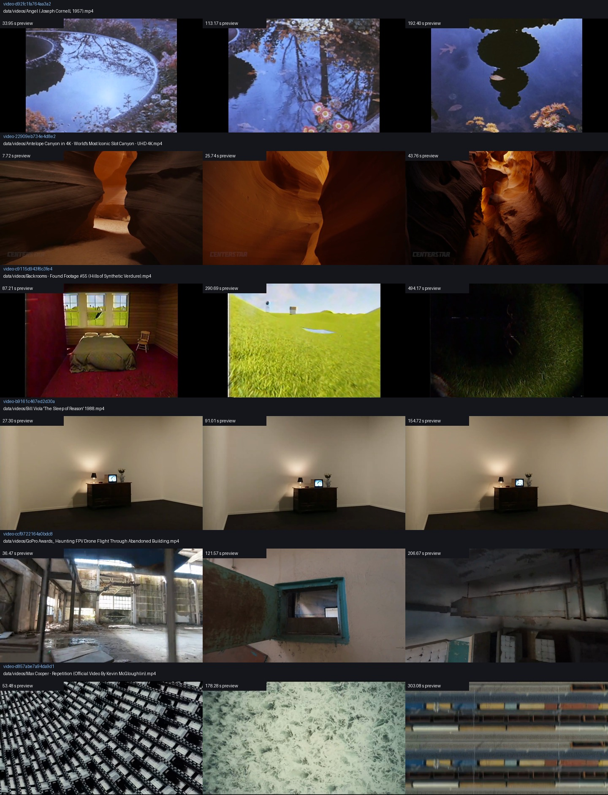
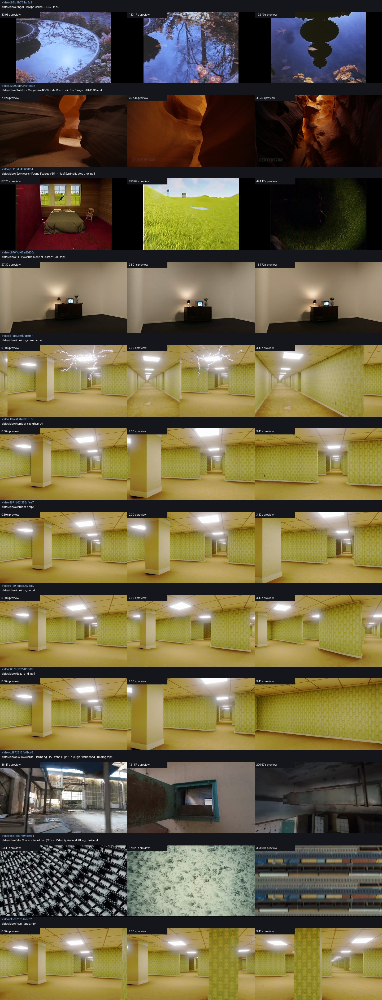

Preview frames are CPU-decoded, scaled samples. Choose a source first; a seed must then be decoded directly at original resolution. No model inference has run.


| Group | Source ID | Source path | Metadata |
|---|---|---|---|
| unreviewed intake candidate | video-d92fc1fa764aa3a2 | data/videos/Angel (Joseph Cornell, 1957).mp4 | 636×480, 226.3s |
| unreviewed intake candidate | video-22909eb734e4d8e2 | data/videos/Antelope Canyon in 4K - World's Most Iconic Slot Canyon - UHD 4K.mp4 | 1280×720, 51.5s |
| unreviewed intake candidate | video-c9115d943f6c3fe4 | data/videos/Backrooms - Found Footage #55 (Hills of Synthetic Verdure).mp4 | 1280×720, 581.4s |
| unreviewed intake candidate | video-b9161c467ed2d30a | data/videos/Bill Viola 'The Sleep of Reason' 1988.mp4 | 1280×720, 182.0s |
| previously sampled local clip | video-51abd379f94b8f84 | data/videos/corridor_corner.mp4 | 1920×1080, 4.0s |
| previously sampled local clip | video-102caf53423018b7 | data/videos/corridor_straight.mp4 | 1920×1080, 4.0s |
| previously sampled local clip | video-2671b32f256a4ee7 | data/videos/corridor_t.mp4 | 1920×1080, 4.0s |
| previously sampled local clip | video-61b91dbeb9026dc7 | data/videos/corridor_x.mp4 | 1920×1080, 4.0s |
| previously sampled local clip | video-f657e9bc27813df8 | data/videos/dead_end.mp4 | 1920×1080, 4.0s |
| unreviewed intake candidate | video-ccf9722164a0bdc8 | data/videos/GoPro Awards_ Haunting FPV Drone Flight Through Abandoned Building.mp4 | 1280×720, 243.1s |
| unreviewed intake candidate | video-d857abe7a94da9d1 | data/videos/Max Cooper - Repetition (Official Video By Kevin McGloughlin).mp4 | 1280×720, 356.6s |
| previously sampled local clip | video-ef0ec21cd4ae7b26 | data/videos/room_large.mp4 | 1920×1080, 4.0s |